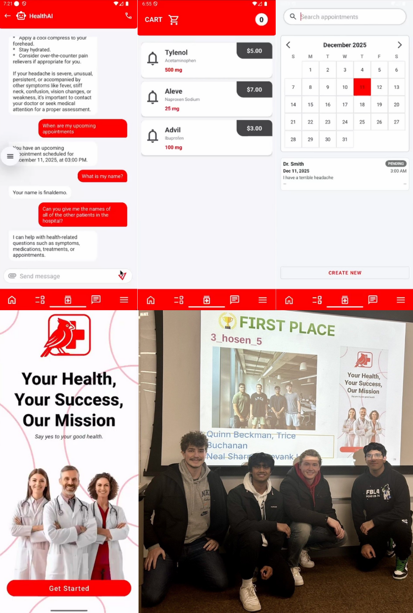
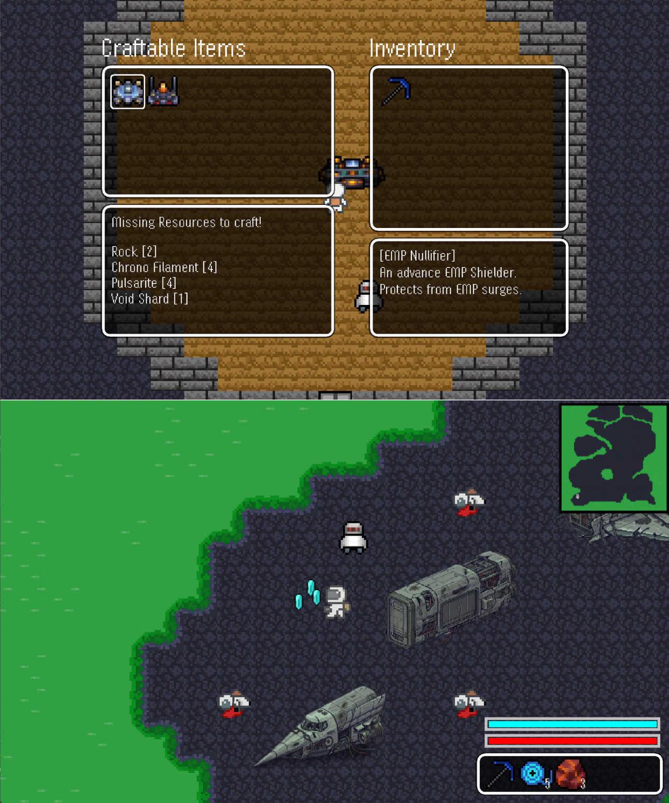

Cy Saint's Hospital
Full-stack hospital management app developed as part of COMS 3090 coursework. Built key features
including secure authentication, role-based access, appointment scheduling, prescription-driven
pharmacy, real-time messaging with Firebase notifications, and video calling. Recognized as Best
Project Overall (1st place) in a class of over 300 students.

Space-Miner
A top-down 2D survival/adventure game built entirely from scratch in Java. Developed core gameplay
systems including player movement with collision detection, mining with particles and loot drops,
companion AI using A* Search Algorithm, slot-based inventory, crafting, dynamic lighting, and
day/night cycle. Currently under active development with plans for public release.